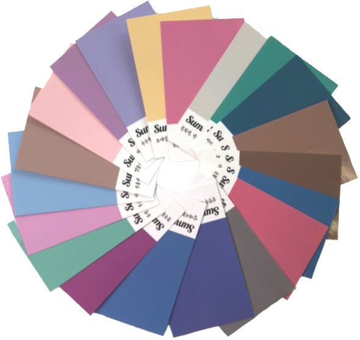

About
 Personal Color
Personal Color

퍼스널 컬러란, '개인이 가진 신체의 색과 가장 어울리는 색을 찾는 것'으로 생기가 돌고
활기차 보이도록 연출하는데 효과적으로 쓰이는 색채학 이론을 말합니다. 개인이 가진 신
체의 색이라면 태어날 때부터 선천적으로 가지고 태어나는 피부, 머리카락, 눈동자의 색으
로 퍼스널 컬러 시스템은 개인 고유의 색에 어울리는 색을 찾아주는 시스템입니다!
History
퍼스널 컬러의 어원은 그리스의 프로소본 (Persopon)인 얼굴과 라틴의
페르소나 (Persona)인 등장인물, 외형적 인격에서 유래가 되었습니다. 20세기초 스위스의
화가이자 독일 바우하우스 교수로 개인의 피부, 머리카락, 눈동자 색 등 고유의 신체 특징에 따라
어울리는 색이 다르다는 걸 처음으로 알아내고 이후 주관적인 색에 대한 느낌을 봄, 여름, 가을, 겨울
사계절로 나누었으며, 이는 퍼스널 컬러를 사계절로 나누게 된 시초가 되었습니다.
그 후, 메리스필렌과 크리스털 쉘런이 봄 여름 가을 겨울의
사계절로 분류되었던 퍼스널 컬러에 세가지의 톤의 차이를 더해 컬러를
세분화 하여 총 12가지의 퍼스널 컬러로 정의 하였습니다.
봄 : light / warm / clear
여름 : light / cool / soft
가을 : soft / warm / deep
겨울 : deep / cool / soft
퍼스널 컬러는 창시자가 누구 한명으로 정해져있는 것이 아닌
이 외에도 많은 사람들에 의해 차즘차즘 발전하여 오늘날의 퍼스널 컬러 진단이 된 것입니다.